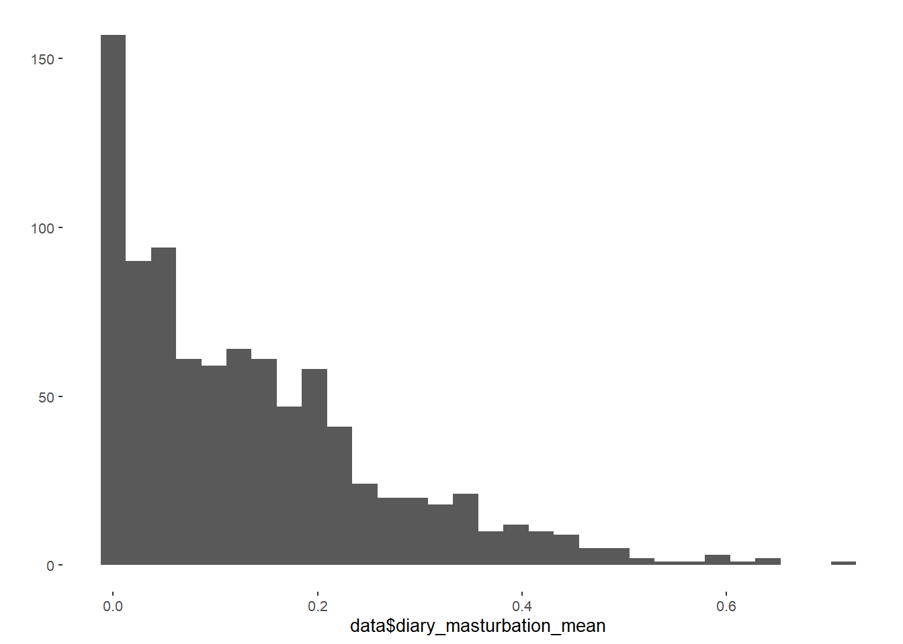

diary_sex_active_sex_sum: Sum of all sexual active days (piv-sex). diary_masturbation_sum: Sum of all masturbation active days. diary_sex_active_sex_mean: Proportion of sexual active days (piv_sex) diary_masturbation_mean: Proportion of masturbation active days. number_of_days: Number of diary days filled out.
## `stat_bin()` using `bins = 30`. Pick better value with `binwidth`.## Warning: Removed 282 rows containing non-finite values (stat_bin).## Min. 1st Qu. Median Mean 3rd Qu. Max. NA's
## 0.00 2.00 5.00 7.25 11.00 42.00 282## `stat_bin()` using `bins = 30`. Pick better value with `binwidth`.## Warning: Removed 282 rows containing non-finite values (stat_bin).## Min. 1st Qu. Median Mean 3rd Qu. Max. NA's
## 0.00 1.00 5.00 6.95 10.00 50.00 282## `stat_bin()` using `bins = 30`. Pick better value with `binwidth`.## Warning: Removed 282 rows containing non-finite values (stat_bin).## Min. 1st Qu. Median Mean 3rd Qu. Max. NA's
## 0.00 0.03 0.11 0.14 0.21 0.80 282## `stat_bin()` using `bins = 30`. Pick better value with `binwidth`.## Warning: Removed 282 rows containing non-finite values (stat_bin).
## Min. 1st Qu. Median Mean 3rd Qu. Max. NA's
## 0.00 0.03 0.10 0.13 0.20 0.71 282
Pearson's product-moment correlation
data: data$diary_sex_active_sex_sum and data$diary_sex_active_sex_mean
t = 57, df = 895, p-value <2e-16
alternative hypothesis: true correlation is not equal to 0
95 percent confidence interval:
0.8710 0.8992
sample estimates:
cor
0.8859
Pearson's product-moment correlation
data: data$diary_masturbation_sum and data$diary_masturbation_mean
t = 65, df = 895, p-value <2e-16
alternative hypothesis: true correlation is not equal to 0
95 percent confidence interval:
0.8955 0.9186
sample estimates:
cor
0.9078
data$sex_per_days = data$diary_sex_active_sex_sum/data$number_of_days
qplot(data$diary_sex_active_sex_mean, data$sex_per_days)## Warning: Removed 282 rows containing missing values (geom_point).data = data %>%
mutate(contraception_hormonal_numeric = ifelse(contraception_hormonal == "yes",
1,
ifelse(contraception_hormonal == "no",
0, NA)),
congruent_contraception_numeric = ifelse(congruent_contraception == "0",
0,
ifelse(congruent_contraception == "1",
1, NA)),
hc_con_interaction = ifelse(is.na(congruent_contraception), NA,
ifelse(contraception_hormonal == "yes" &
congruent_contraception == "1", 1, 0)))covariates = list("age",
"net_incomeeuro_500_1000", "net_incomeeuro_1000_2000",
"net_incomeeuro_2000_3000", "net_incomeeuro_gt_3000",
"net_incomedont_tell",
"relationship_duration_factorPartnered_upto28months",
"relationship_duration_factorPartnered_upto52months",
"relationship_duration_factorPartnered_morethan52months",
"education_years", "bfi_extra", "bfi_neuro", "bfi_agree",
"bfi_consc", "bfi_open", "religiosity")
names(covariates) = c("age",
"net_incomeeuro_500_1000", "net_incomeeuro_1000_2000",
"net_incomeeuro_2000_3000", "net_incomeeuro_gt_3000",
"net_incomedont_tell",
"relationship_duration_factorPartnered_upto28months",
"relationship_duration_factorPartnered_upto52months",
"relationship_duration_factorPartnered_morethan52months",
"education_years", "bfi_extra", "bfi_neuro", "bfi_agree",
"bfi_consc", "bfi_open", "religiosity")| term | estimate | std.error | statistic | p.value |
|---|---|---|---|---|
| (Intercept) | -2.0889 | 0.0171 | -122.32 | 0 |
| contraception_hormonal_numeric | 0.2496 | 0.0248 | 10.05 | 0 |
##
## Call:
## glm(formula = diary_sex_active_sex_sum ~ offset(log(number_of_days)) +
## contraception_hormonal_numeric, family = poisson(), data = data)
##
## Deviance Residuals:
## Min 1Q Median 3Q Max
## -4.717 -2.334 -0.511 1.160 7.651
##
## Coefficients:
## Estimate Std. Error z value Pr(>|z|)
## (Intercept) -2.0889 0.0171 -122.3 <2e-16 ***
## contraception_hormonal_numeric 0.2496 0.0248 10.1 <2e-16 ***
## ---
## Signif. codes: 0 '***' 0.001 '**' 0.01 '*' 0.05 '.' 0.1 ' ' 1
##
## (Dispersion parameter for poisson family taken to be 1)
##
## Null deviance: 5669.1 on 896 degrees of freedom
## Residual deviance: 5568.8 on 895 degrees of freedom
## (282 Beobachtungen als fehlend gelöscht)
## AIC: 8330
##
## Number of Fisher Scoring iterations: 5m_hc_sexfreqpen_sensitivity <- sensemakr(estimate = 0.2496,
se = 0.0248,
dof = 895,
treatment = "contraception_hormonal_numeric",
kd = 1:3, #these arguments parameterize how many times
#stronger the confounder is related to the
#treatment
ky = 1:3, #these arguments parameterize how many times
#stronger the confounder is related to the outcome
q = 1, #fraction of the effect estimate that would have to be
#explained away to be problematic. Setting q = 1,
#means that a reduction of 100% of the current effect
#estimate, that is, a true effect of zero, would be
#deemed problematic.
alpha = 0.05,
reduce = TRUE #confounder reduce absolute effect size
)
m_hc_sexfreqpen_sensitivity## Sensitivity Analysis to Unobserved Confounding
##
## Model Formula: "Data provided manually"
##
## Null hypothesis: q = 1 and reduce = TRUE
##
## Unadjusted Estimates of ' contraception_hormonal_numeric ':
## Coef. estimate: 0.25
## Standard Error: 0.025
## t-value: 10.06
##
## Sensitivity Statistics:
## Partial R2 of treatment with outcome: 0.102
## Robustness Value, q = 1 : 0.285
## Robustness Value, q = 1 alpha = 0.05 : 0.237
##
## For more information, check summary.## Sensitivity Analysis to Unobserved Confounding
##
## Model Formula: "Data provided manually"
##
## Null hypothesis: q = 1 and reduce = TRUE
## -- This means we are considering biases that reduce the absolute value of the current estimate.
## -- The null hypothesis deemed problematic is H0:tau = 0
##
## Unadjusted Estimates of 'contraception_hormonal_numeric':
## Coef. estimate: 0.25
## Standard Error: 0.025
## t-value (H0:tau = 0): 10.06
##
## Sensitivity Statistics:
## Partial R2 of treatment with outcome: 0.102
## Robustness Value, q = 1: 0.285
## Robustness Value, q = 1, alpha = 0.05: 0.237
##
## Verbal interpretation of sensitivity statistics:
##
## -- Partial R2 of the treatment with the outcome: an extreme confounder (orthogonal to the covariates) that explains 100% of the residual variance of the outcome, would need to explain at least 10.2% of the residual variance of the treatment to fully account for the observed estimated effect.
##
## -- Robustness Value, q = 1: unobserved confounders (orthogonal to the covariates) that explain more than 28.5% of the residual variance of both the treatment and the outcome are strong enough to bring the point estimate to 0 (a bias of 100% of the original estimate). Conversely, unobserved confounders that do not explain more than 28.5% of the residual variance of both the treatment and the outcome are not strong enough to bring the point estimate to 0.
##
## -- Robustness Value, q = 1, alpha = 0.05: unobserved confounders (orthogonal to the covariates) that explain more than 23.7% of the residual variance of both the treatment and the outcome are strong enough to bring the estimate to a range where it is no longer 'statistically different' from 0 (a bias of 100% of the original estimate), at the significance level of alpha = 0.05. Conversely, unobserved confounders that do not explain more than 23.7% of the residual variance of both the treatment and the outcome are not strong enough to bring the estimate to a range where it is no longer 'statistically different' from 0, at the significance level of alpha = 0.05.| term | estimate | std.error | statistic | p.value |
|---|---|---|---|---|
| (Intercept) | -3.3475 | 0.1826 | -18.3304 | 0.0000 |
| contraception_hormonal_numeric | 0.1653 | 0.0263 | 6.2787 | 0.0000 |
| age | -0.0002 | 0.0033 | -0.0463 | 0.9631 |
| net_incomeeuro_500_1000 | 0.1610 | 0.0327 | 4.9288 | 0.0000 |
| net_incomeeuro_1000_2000 | 0.1981 | 0.0446 | 4.4390 | 0.0000 |
| net_incomeeuro_2000_3000 | 0.3785 | 0.0587 | 6.4451 | 0.0000 |
| net_incomeeuro_gt_3000 | 0.0599 | 0.1138 | 0.5265 | 0.5985 |
| net_incomedont_tell | 0.4489 | 0.0741 | 6.0617 | 0.0000 |
| relationship_duration_factorPartnered_upto12months | 1.3381 | 0.0437 | 30.6445 | 0.0000 |
| relationship_duration_factorPartnered_upto28months | 1.2172 | 0.0435 | 27.9893 | 0.0000 |
| relationship_duration_factorPartnered_upto52months | 0.9570 | 0.0479 | 19.9586 | 0.0000 |
| relationship_duration_factorPartnered_morethan52months | 0.9156 | 0.0485 | 18.8765 | 0.0000 |
| education_years | -0.0097 | 0.0028 | -3.5073 | 0.0005 |
| bfi_extra | 0.0080 | 0.0173 | 0.4616 | 0.6444 |
| bfi_neuro | -0.0022 | 0.0190 | -0.1180 | 0.9061 |
| bfi_agree | 0.0947 | 0.0219 | 4.3352 | 0.0000 |
| bfi_consc | -0.0165 | 0.0198 | -0.8312 | 0.4059 |
| bfi_open | 0.0295 | 0.0211 | 1.4008 | 0.1613 |
| religiosity | -0.0130 | 0.0095 | -1.3666 | 0.1717 |
##
## Call:
## glm(formula = diary_sex_active_sex_sum ~ offset(log(number_of_days)) +
## contraception_hormonal_numeric + age + net_income + relationship_duration_factor +
## education_years + bfi_extra + bfi_neuro + bfi_agree + bfi_consc +
## bfi_open + religiosity, family = "poisson", data = data)
##
## Deviance Residuals:
## Min 1Q Median 3Q Max
## -5.265 -1.909 -0.527 1.036 8.461
##
## Coefficients:
## Estimate Std. Error z value Pr(>|z|)
## (Intercept) -3.347547 0.182622 -18.33 < 2e-16 ***
## contraception_hormonal_numeric 0.165323 0.026331 6.28 0.00000000034 ***
## age -0.000152 0.003294 -0.05 0.96311
## net_incomeeuro_500_1000 0.160954 0.032655 4.93 0.00000082717 ***
## net_incomeeuro_1000_2000 0.198089 0.044624 4.44 0.00000903619 ***
## net_incomeeuro_2000_3000 0.378487 0.058725 6.45 0.00000000012 ***
## net_incomeeuro_gt_3000 0.059903 0.113770 0.53 0.59852
## net_incomedont_tell 0.448893 0.074054 6.06 0.00000000135 ***
## relationship_duration_factorPartnered_upto12months 1.338053 0.043664 30.64 < 2e-16 ***
## relationship_duration_factorPartnered_upto28months 1.217249 0.043490 27.99 < 2e-16 ***
## relationship_duration_factorPartnered_upto52months 0.956976 0.047948 19.96 < 2e-16 ***
## relationship_duration_factorPartnered_morethan52months 0.915646 0.048507 18.88 < 2e-16 ***
## education_years -0.009717 0.002771 -3.51 0.00045 ***
## bfi_extra 0.008004 0.017339 0.46 0.64436
## bfi_neuro -0.002238 0.018971 -0.12 0.90610
## bfi_agree 0.094745 0.021855 4.34 0.00001456222 ***
## bfi_consc -0.016458 0.019800 -0.83 0.40585
## bfi_open 0.029528 0.021079 1.40 0.16126
## religiosity -0.012999 0.009511 -1.37 0.17174
## ---
## Signif. codes: 0 '***' 0.001 '**' 0.01 '*' 0.05 '.' 0.1 ' ' 1
##
## (Dispersion parameter for poisson family taken to be 1)
##
## Null deviance: 5669.1 on 896 degrees of freedom
## Residual deviance: 4158.5 on 878 degrees of freedom
## (282 Beobachtungen als fehlend gelöscht)
## AIC: 6954
##
## Number of Fisher Scoring iterations: 6m_hc_sexfreqpen_sensitivity <- sensemakr(estimate = 0.165323,
se = 0.026331,
dof = 878,
treatment = "contraception_hormonal_numeric",
benchmark_covariates = covariates, #covariates that will be
#used to bound the
#plausible strength of the
#unobserved confounders
kd = 1:3, #these arguments parameterize how many times
#stronger the confounder is related to the
#treatment
ky = 1:3, #these arguments parameterize how many times
#stronger the confounder is related to the outcome
q = 1, #fraction of the effect estimate that would have to be
#explained away to be problematic. Setting q = 1,
#means that a reduction of 100% of the current effect
#estimate, that is, a true effect of zero, would be
#deemed problematic.
alpha = 0.05,
reduce = TRUE #confounder reduce absolute effect size
)
m_hc_sexfreqpen_sensitivity## Sensitivity Analysis to Unobserved Confounding
##
## Model Formula: "Data provided manually"
##
## Null hypothesis: q = 1 and reduce = TRUE
##
## Unadjusted Estimates of ' contraception_hormonal_numeric ':
## Coef. estimate: 0.165
## Standard Error: 0.026
## t-value: 6.279
##
## Sensitivity Statistics:
## Partial R2 of treatment with outcome: 0.043
## Robustness Value, q = 1 : 0.191
## Robustness Value, q = 1 alpha = 0.05 : 0.135
##
## For more information, check summary.## Sensitivity Analysis to Unobserved Confounding
##
## Model Formula: "Data provided manually"
##
## Null hypothesis: q = 1 and reduce = TRUE
## -- This means we are considering biases that reduce the absolute value of the current estimate.
## -- The null hypothesis deemed problematic is H0:tau = 0
##
## Unadjusted Estimates of 'contraception_hormonal_numeric':
## Coef. estimate: 0.165
## Standard Error: 0.026
## t-value (H0:tau = 0): 6.279
##
## Sensitivity Statistics:
## Partial R2 of treatment with outcome: 0.043
## Robustness Value, q = 1: 0.191
## Robustness Value, q = 1, alpha = 0.05: 0.135
##
## Verbal interpretation of sensitivity statistics:
##
## -- Partial R2 of the treatment with the outcome: an extreme confounder (orthogonal to the covariates) that explains 100% of the residual variance of the outcome, would need to explain at least 4.3% of the residual variance of the treatment to fully account for the observed estimated effect.
##
## -- Robustness Value, q = 1: unobserved confounders (orthogonal to the covariates) that explain more than 19.1% of the residual variance of both the treatment and the outcome are strong enough to bring the point estimate to 0 (a bias of 100% of the original estimate). Conversely, unobserved confounders that do not explain more than 19.1% of the residual variance of both the treatment and the outcome are not strong enough to bring the point estimate to 0.
##
## -- Robustness Value, q = 1, alpha = 0.05: unobserved confounders (orthogonal to the covariates) that explain more than 13.5% of the residual variance of both the treatment and the outcome are strong enough to bring the estimate to a range where it is no longer 'statistically different' from 0 (a bias of 100% of the original estimate), at the significance level of alpha = 0.05. Conversely, unobserved confounders that do not explain more than 13.5% of the residual variance of both the treatment and the outcome are not strong enough to bring the estimate to a range where it is no longer 'statistically different' from 0, at the significance level of alpha = 0.05.| term | estimate | std.error | statistic | p.value |
|---|---|---|---|---|
| (Intercept) | 0.1262 | 0.0058 | 21.937 | 0.0000 |
| contraception_hormonal_numeric | 0.0350 | 0.0088 | 3.958 | 0.0001 |
##
## Call:
## lm(formula = diary_sex_active_sex_mean ~ contraception_hormonal_numeric,
## data = data)
##
## Residuals:
## Min 1Q Median 3Q Max
## -0.1612 -0.1057 -0.0291 0.0650 0.6388
##
## Coefficients:
## Estimate Std. Error t value Pr(>|t|)
## (Intercept) 0.12618 0.00575 21.94 < 2e-16 ***
## contraception_hormonal_numeric 0.03503 0.00885 3.96 0.000081 ***
## ---
## Signif. codes: 0 '***' 0.001 '**' 0.01 '*' 0.05 '.' 0.1 ' ' 1
##
## Residual standard error: 0.131 on 895 degrees of freedom
## (282 Beobachtungen als fehlend gelöscht)
## Multiple R-squared: 0.0172, Adjusted R-squared: 0.0161
## F-statistic: 15.7 on 1 and 895 DF, p-value: 0.0000815m_hc_sexfreqpen_linear_sensitivity <- sensemakr(model = m_hc_sexfreqpen_linear,
treatment = "contraception_hormonal_numeric",
kd = 1:3, #these arguments parameterize how many times
#stronger the confounder is related to the
#treatment
ky = 1:3, #these arguments parameterize how many times
#stronger the confounder is related to the outcome
q = 1, #fraction of the effect estimate that would have to be
#explained away to be problematic. Setting q = 1,
#means that a reduction of 100% of the current effect
#estimate, that is, a true effect of zero, would be
#deemed problematic.
alpha = 0.05,
reduce = TRUE #confounder reduce absolute effect size
)
m_hc_sexfreqpen_linear_sensitivity## Sensitivity Analysis to Unobserved Confounding
##
## Model Formula: diary_sex_active_sex_mean ~ contraception_hormonal_numeric
##
## Null hypothesis: q = 1 and reduce = TRUE
##
## Unadjusted Estimates of ' contraception_hormonal_numeric ':
## Coef. estimate: 0.035
## Standard Error: 0.009
## t-value: 3.958
##
## Sensitivity Statistics:
## Partial R2 of treatment with outcome: 0.017
## Robustness Value, q = 1 : 0.124
## Robustness Value, q = 1 alpha = 0.05 : 0.064
##
## For more information, check summary.## Sensitivity Analysis to Unobserved Confounding
##
## Model Formula: diary_sex_active_sex_mean ~ contraception_hormonal_numeric
##
## Null hypothesis: q = 1 and reduce = TRUE
## -- This means we are considering biases that reduce the absolute value of the current estimate.
## -- The null hypothesis deemed problematic is H0:tau = 0
##
## Unadjusted Estimates of 'contraception_hormonal_numeric':
## Coef. estimate: 0.035
## Standard Error: 0.009
## t-value (H0:tau = 0): 3.958
##
## Sensitivity Statistics:
## Partial R2 of treatment with outcome: 0.017
## Robustness Value, q = 1: 0.124
## Robustness Value, q = 1, alpha = 0.05: 0.064
##
## Verbal interpretation of sensitivity statistics:
##
## -- Partial R2 of the treatment with the outcome: an extreme confounder (orthogonal to the covariates) that explains 100% of the residual variance of the outcome, would need to explain at least 1.7% of the residual variance of the treatment to fully account for the observed estimated effect.
##
## -- Robustness Value, q = 1: unobserved confounders (orthogonal to the covariates) that explain more than 12.4% of the residual variance of both the treatment and the outcome are strong enough to bring the point estimate to 0 (a bias of 100% of the original estimate). Conversely, unobserved confounders that do not explain more than 12.4% of the residual variance of both the treatment and the outcome are not strong enough to bring the point estimate to 0.
##
## -- Robustness Value, q = 1, alpha = 0.05: unobserved confounders (orthogonal to the covariates) that explain more than 6.4% of the residual variance of both the treatment and the outcome are strong enough to bring the estimate to a range where it is no longer 'statistically different' from 0 (a bias of 100% of the original estimate), at the significance level of alpha = 0.05. Conversely, unobserved confounders that do not explain more than 6.4% of the residual variance of both the treatment and the outcome are not strong enough to bring the estimate to a range where it is no longer 'statistically different' from 0, at the significance level of alpha = 0.05.| term | estimate | std.error | statistic | p.value |
|---|---|---|---|---|
| (Intercept) | -0.0143 | 0.0565 | -0.2537 | 0.7998 |
| contraception_hormonal_numeric | 0.0243 | 0.0083 | 2.9393 | 0.0034 |
| age | -0.0001 | 0.0010 | -0.0547 | 0.9564 |
| net_incomeeuro_500_1000 | 0.0237 | 0.0099 | 2.3863 | 0.0172 |
| net_incomeeuro_1000_2000 | 0.0223 | 0.0136 | 1.6491 | 0.0995 |
| net_incomeeuro_2000_3000 | 0.0589 | 0.0202 | 2.9216 | 0.0036 |
| net_incomeeuro_gt_3000 | 0.0030 | 0.0377 | 0.0790 | 0.9371 |
| net_incomedont_tell | 0.0719 | 0.0272 | 2.6432 | 0.0084 |
| relationship_duration_factorPartnered_upto12months | 0.1588 | 0.0121 | 13.1119 | 0.0000 |
| relationship_duration_factorPartnered_upto28months | 0.1332 | 0.0115 | 11.5701 | 0.0000 |
| relationship_duration_factorPartnered_upto52months | 0.0898 | 0.0122 | 7.3568 | 0.0000 |
| relationship_duration_factorPartnered_morethan52months | 0.0890 | 0.0126 | 7.0791 | 0.0000 |
| education_years | -0.0013 | 0.0009 | -1.4893 | 0.1368 |
| bfi_extra | 0.0015 | 0.0056 | 0.2760 | 0.7826 |
| bfi_neuro | 0.0011 | 0.0059 | 0.1819 | 0.8557 |
| bfi_agree | 0.0143 | 0.0071 | 2.0105 | 0.0447 |
| bfi_consc | -0.0025 | 0.0063 | -0.3960 | 0.6922 |
| bfi_open | 0.0048 | 0.0066 | 0.7288 | 0.4663 |
| religiosity | -0.0029 | 0.0030 | -0.9694 | 0.3326 |
##
## Call:
## lm(formula = diary_sex_active_sex_mean ~ contraception_hormonal_numeric +
## age + net_income + relationship_duration_factor + education_years +
## bfi_extra + bfi_neuro + bfi_agree + bfi_consc + bfi_open +
## religiosity, data = data)
##
## Residuals:
## Min 1Q Median 3Q Max
## -0.2392 -0.0693 -0.0232 0.0530 0.6080
##
## Coefficients:
## Estimate Std. Error t value Pr(>|t|)
## (Intercept) -0.0143402 0.0565191 -0.25 0.7998
## contraception_hormonal_numeric 0.0242979 0.0082664 2.94 0.0034 **
## age -0.0000572 0.0010467 -0.05 0.9564
## net_incomeeuro_500_1000 0.0237180 0.0099392 2.39 0.0172 *
## net_incomeeuro_1000_2000 0.0223460 0.0135506 1.65 0.0995 .
## net_incomeeuro_2000_3000 0.0588764 0.0201520 2.92 0.0036 **
## net_incomeeuro_gt_3000 0.0029770 0.0376972 0.08 0.9371
## net_incomedont_tell 0.0718555 0.0271855 2.64 0.0084 **
## relationship_duration_factorPartnered_upto12months 0.1588406 0.0121142 13.11 < 2e-16 ***
## relationship_duration_factorPartnered_upto28months 0.1331838 0.0115110 11.57 < 2e-16 ***
## relationship_duration_factorPartnered_upto52months 0.0897725 0.0122027 7.36 4.3e-13 ***
## relationship_duration_factorPartnered_morethan52months 0.0889894 0.0125708 7.08 3.0e-12 ***
## education_years -0.0012984 0.0008718 -1.49 0.1368
## bfi_extra 0.0015351 0.0055612 0.28 0.7826
## bfi_neuro 0.0010647 0.0058529 0.18 0.8557
## bfi_agree 0.0142641 0.0070948 2.01 0.0447 *
## bfi_consc -0.0024751 0.0062501 -0.40 0.6922
## bfi_open 0.0047781 0.0065563 0.73 0.4663
## religiosity -0.0029345 0.0030271 -0.97 0.3326
## ---
## Signif. codes: 0 '***' 0.001 '**' 0.01 '*' 0.05 '.' 0.1 ' ' 1
##
## Residual standard error: 0.117 on 878 degrees of freedom
## (282 Beobachtungen als fehlend gelöscht)
## Multiple R-squared: 0.236, Adjusted R-squared: 0.22
## F-statistic: 15.1 on 18 and 878 DF, p-value: <2e-16m_hc_sexfreqpen_linear_sensitivity <- sensemakr(model = m_hc_sexfreqpen_linear,
treatment = "contraception_hormonal_numeric",
benchmark_covariates = covariates, #covariates that will be
#used to bound the
#plausible strength of the
#unobserved confounders
kd = 1:3, #these arguments parameterize how many times
#stronger the confounder is related to the
#treatment
ky = 1:3, #these arguments parameterize how many times
#stronger the confounder is related to the outcome
q = 1, #fraction of the effect estimate that would have to be
#explained away to be problematic. Setting q = 1,
#means that a reduction of 100% of the current effect
#estimate, that is, a true effect of zero, would be
#deemed problematic.
alpha = 0.05,
reduce = TRUE #confounder reduce absolute effect size
)
m_hc_sexfreqpen_linear_sensitivity## Sensitivity Analysis to Unobserved Confounding
##
## Model Formula: diary_sex_active_sex_mean ~ contraception_hormonal_numeric +
## age + net_income + relationship_duration_factor + education_years +
## bfi_extra + bfi_neuro + bfi_agree + bfi_consc + bfi_open +
## religiosity
##
## Null hypothesis: q = 1 and reduce = TRUE
##
## Unadjusted Estimates of ' contraception_hormonal_numeric ':
## Coef. estimate: 0.024
## Standard Error: 0.008
## t-value: 2.939
##
## Sensitivity Statistics:
## Partial R2 of treatment with outcome: 0.01
## Robustness Value, q = 1 : 0.094
## Robustness Value, q = 1 alpha = 0.05 : 0.032
##
## For more information, check summary.## Sensitivity Analysis to Unobserved Confounding
##
## Model Formula: diary_sex_active_sex_mean ~ contraception_hormonal_numeric +
## age + net_income + relationship_duration_factor + education_years +
## bfi_extra + bfi_neuro + bfi_agree + bfi_consc + bfi_open +
## religiosity
##
## Null hypothesis: q = 1 and reduce = TRUE
## -- This means we are considering biases that reduce the absolute value of the current estimate.
## -- The null hypothesis deemed problematic is H0:tau = 0
##
## Unadjusted Estimates of 'contraception_hormonal_numeric':
## Coef. estimate: 0.024
## Standard Error: 0.008
## t-value (H0:tau = 0): 2.939
##
## Sensitivity Statistics:
## Partial R2 of treatment with outcome: 0.01
## Robustness Value, q = 1: 0.094
## Robustness Value, q = 1, alpha = 0.05: 0.032
##
## Verbal interpretation of sensitivity statistics:
##
## -- Partial R2 of the treatment with the outcome: an extreme confounder (orthogonal to the covariates) that explains 100% of the residual variance of the outcome, would need to explain at least 1% of the residual variance of the treatment to fully account for the observed estimated effect.
##
## -- Robustness Value, q = 1: unobserved confounders (orthogonal to the covariates) that explain more than 9.4% of the residual variance of both the treatment and the outcome are strong enough to bring the point estimate to 0 (a bias of 100% of the original estimate). Conversely, unobserved confounders that do not explain more than 9.4% of the residual variance of both the treatment and the outcome are not strong enough to bring the point estimate to 0.
##
## -- Robustness Value, q = 1, alpha = 0.05: unobserved confounders (orthogonal to the covariates) that explain more than 3.2% of the residual variance of both the treatment and the outcome are strong enough to bring the estimate to a range where it is no longer 'statistically different' from 0 (a bias of 100% of the original estimate), at the significance level of alpha = 0.05. Conversely, unobserved confounders that do not explain more than 3.2% of the residual variance of both the treatment and the outcome are not strong enough to bring the estimate to a range where it is no longer 'statistically different' from 0, at the significance level of alpha = 0.05.
##
## Bounds on omitted variable bias:
##
## --The table below shows the maximum strength of unobserved confounders with association with the treatment and the outcome bounded by a multiple of the observed explanatory power of the chosen benchmark covariate(s).
##
## Bound Label R2dz.x R2yz.dx Treatment
## 1x age 0.031 0.000 contraception_hormonal_numeric
## 2x age 0.062 0.000 contraception_hormonal_numeric
## 3x age 0.093 0.000 contraception_hormonal_numeric
## 1x net_incomeeuro_500_1000 0.002 0.007 contraception_hormonal_numeric
## 2x net_incomeeuro_500_1000 0.003 0.013 contraception_hormonal_numeric
## 3x net_incomeeuro_500_1000 0.005 0.020 contraception_hormonal_numeric
## 1x net_incomeeuro_1000_2000 0.001 0.003 contraception_hormonal_numeric
## 2x net_incomeeuro_1000_2000 0.001 0.006 contraception_hormonal_numeric
## 3x net_incomeeuro_1000_2000 0.002 0.009 contraception_hormonal_numeric
## 1x net_incomeeuro_2000_3000 0.000 0.010 contraception_hormonal_numeric
## 2x net_incomeeuro_2000_3000 0.000 0.019 contraception_hormonal_numeric
## 3x net_incomeeuro_2000_3000 0.000 0.029 contraception_hormonal_numeric
## 1x net_incomeeuro_gt_3000 0.001 0.000 contraception_hormonal_numeric
## 2x net_incomeeuro_gt_3000 0.002 0.000 contraception_hormonal_numeric
## 3x net_incomeeuro_gt_3000 0.003 0.000 contraception_hormonal_numeric
## 1x net_incomedont_tell 0.000 0.008 contraception_hormonal_numeric
## 2x net_incomedont_tell 0.000 0.016 contraception_hormonal_numeric
## 3x net_incomedont_tell 0.000 0.024 contraception_hormonal_numeric
## 1x relationship_duration_factorPartnered_upto28months 0.020 0.159 contraception_hormonal_numeric
## 2x relationship_duration_factorPartnered_upto28months 0.039 0.317 contraception_hormonal_numeric
## 3x relationship_duration_factorPartnered_upto28months 0.059 0.477 contraception_hormonal_numeric
## 1x relationship_duration_factorPartnered_upto52months 0.017 0.064 contraception_hormonal_numeric
## 2x relationship_duration_factorPartnered_upto52months 0.035 0.128 contraception_hormonal_numeric
## 3x relationship_duration_factorPartnered_upto52months 0.052 0.192 contraception_hormonal_numeric
## 1x relationship_duration_factorPartnered_morethan52months 0.029 0.060 contraception_hormonal_numeric
## 2x relationship_duration_factorPartnered_morethan52months 0.057 0.121 contraception_hormonal_numeric
## 3x relationship_duration_factorPartnered_morethan52months 0.086 0.182 contraception_hormonal_numeric
## 1x education_years 0.001 0.003 contraception_hormonal_numeric
## 2x education_years 0.002 0.005 contraception_hormonal_numeric
## 3x education_years 0.004 0.008 contraception_hormonal_numeric
## 1x bfi_extra 0.001 0.000 contraception_hormonal_numeric
## 2x bfi_extra 0.002 0.000 contraception_hormonal_numeric
## 3x bfi_extra 0.003 0.000 contraception_hormonal_numeric
## 1x bfi_neuro 0.001 0.000 contraception_hormonal_numeric
## 2x bfi_neuro 0.003 0.000 contraception_hormonal_numeric
## 3x bfi_neuro 0.004 0.000 contraception_hormonal_numeric
## 1x bfi_agree 0.001 0.005 contraception_hormonal_numeric
## 2x bfi_agree 0.001 0.009 contraception_hormonal_numeric
## 3x bfi_agree 0.002 0.014 contraception_hormonal_numeric
## 1x bfi_consc 0.009 0.000 contraception_hormonal_numeric
## 2x bfi_consc 0.018 0.000 contraception_hormonal_numeric
## 3x bfi_consc 0.026 0.001 contraception_hormonal_numeric
## 1x bfi_open 0.006 0.001 contraception_hormonal_numeric
## 2x bfi_open 0.012 0.001 contraception_hormonal_numeric
## 3x bfi_open 0.018 0.002 contraception_hormonal_numeric
## 1x religiosity 0.001 0.001 contraception_hormonal_numeric
## 2x religiosity 0.003 0.002 contraception_hormonal_numeric
## 3x religiosity 0.004 0.003 contraception_hormonal_numeric
## Adjusted Estimate Adjusted Se Adjusted T Adjusted Lower CI Adjusted Upper CI
## 0.024 0.008 2.882 0.008 0.041
## 0.024 0.009 2.825 0.007 0.041
## 0.024 0.009 2.768 0.007 0.041
## 0.023 0.008 2.845 0.007 0.040
## 0.023 0.008 2.752 0.006 0.039
## 0.022 0.008 2.658 0.006 0.038
## 0.024 0.008 2.901 0.008 0.040
## 0.024 0.008 2.864 0.007 0.040
## 0.023 0.008 2.826 0.007 0.039
## 0.024 0.008 2.924 0.008 0.040
## 0.024 0.008 2.910 0.008 0.040
## 0.024 0.008 2.896 0.008 0.040
## 0.024 0.008 2.934 0.008 0.041
## 0.024 0.008 2.931 0.008 0.041
## 0.024 0.008 2.927 0.008 0.040
## 0.024 0.008 2.946 0.008 0.040
## 0.024 0.008 2.955 0.008 0.040
## 0.024 0.008 2.964 0.008 0.040
## 0.010 0.008 1.365 -0.005 0.026
## -0.004 0.007 -0.526 -0.017 0.010
## -0.018 0.006 -2.935 -0.030 -0.006
## 0.016 0.008 1.989 0.000 0.032
## 0.008 0.008 0.976 -0.008 0.023
## -0.001 0.008 -0.115 -0.016 0.014
## 0.014 0.008 1.716 -0.002 0.030
## 0.003 0.008 0.412 -0.012 0.019
## -0.008 0.008 -0.988 -0.023 0.008
## 0.024 0.008 2.888 0.008 0.040
## 0.023 0.008 2.838 0.007 0.040
## 0.023 0.008 2.788 0.007 0.039
## 0.024 0.008 2.927 0.008 0.040
## 0.024 0.008 2.916 0.008 0.040
## 0.024 0.008 2.906 0.008 0.040
## 0.024 0.008 2.929 0.008 0.040
## 0.024 0.008 2.920 0.008 0.040
## 0.024 0.008 2.911 0.008 0.040
## 0.024 0.008 2.891 0.008 0.040
## 0.023 0.008 2.845 0.007 0.040
## 0.023 0.008 2.798 0.007 0.039
## 0.024 0.008 2.887 0.008 0.040
## 0.024 0.008 2.837 0.007 0.040
## 0.023 0.008 2.787 0.007 0.040
## 0.024 0.008 2.872 0.008 0.040
## 0.023 0.008 2.807 0.007 0.040
## 0.023 0.008 2.741 0.006 0.039
## 0.024 0.008 2.901 0.008 0.040
## 0.024 0.008 2.865 0.007 0.040
## 0.023 0.008 2.828 0.007 0.040